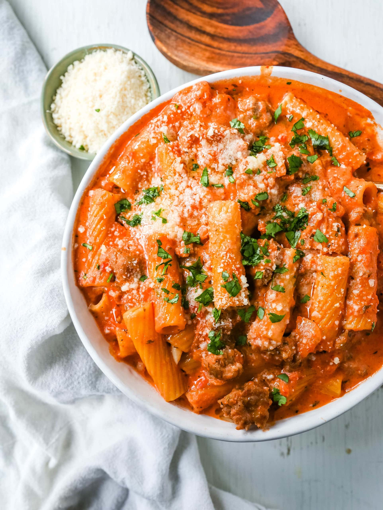

Sausage Rigatoni with Cream Sauce

Description
Large pasta tubes with chunks of delicious, spicy sausage, all slathered in a thick, cream-based sauce and topped with parmesan cheese!
Ingredients
- Rigatoni pasta
- Italian sausage
- Tomato paste
- Onion, diced
- Red peppers, diced
- Mozzarella cheese
- Parsley
- Salt and pepper
Steps
- Begin boiling water for the pasta.
- Brown sausage at the bottom of a large pot.
- Add onions and red peppers.
- When sausage is cooked through, add tomato paste.
- Add pasta to boiling water.
- Stir heavy cream into the sausage mixture.
- Once rigatoni is cooked, drain and stir into sausage and sauce.
- Serve with mozzarella, parmesan and parsley!